Meu Editor de Arquivos — Manual do usuário
Versão 1.1.0
1. Bem-vindo
O Meu Editor de Arquivos é um editor leve para quem trabalha com textos, anotações, scripts, arquivos de configuração, logs e código. Ele funciona no Windows 11, no Debian 12 e 13 e no Ubuntu 22.04 ou mais novo, e não precisa de internet para editar.
O que você encontra nele:
- abas para vários arquivos ao mesmo tempo, com recuperação automática do que você escreveu;
- Markdown que abre formatado, com um botão para editar o texto;
- um visualizador de JSON em que você abre e fecha as partes do arquivo;
- busca e substituição em um arquivo ou em uma pasta inteira;
- realce de cores para dezenas de linguagens, snippets e macros;
- conta de usuário para guardar arquivos na nuvem e abri-los em outros computadores;
- tela em seis idiomas.
2. Conhecendo a tela
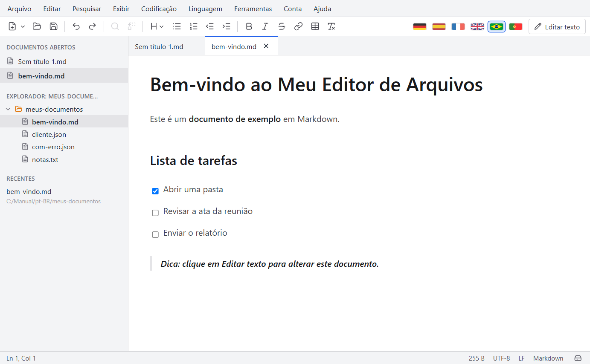
- Barra de menus (no alto): Arquivo, Editar, Pesquisar, Exibir, Codificação, Linguagem, Ferramentas, Conta e Ajuda.
- Barra de ferramentas: atalhos para os comandos mais usados. Os botões de formatação aparecem quando o documento é Markdown. No lado direito ficam as bandeiras dos idiomas e o botão que alterna entre visualizar e editar.
- Barra lateral (à esquerda): os documentos abertos, o explorador da pasta aberta e os arquivos recentes. Para ocultá-la ou exibi-la, use Ctrl+Shift+B.
- Abas: cada documento tem uma aba. Um ponto (●) ao lado do nome indica que há alterações ainda não gravadas no arquivo.
- Área de edição: onde você lê e escreve.
- Painel inferior: mostra os resultados da busca em arquivos. Ele se abre sozinho quando você usa a busca.
- Barra de status (embaixo): linha e coluna do cursor, tamanho do arquivo, codificação, tipo de quebra de linha e linguagem do documento.
3. Criar e abrir arquivos
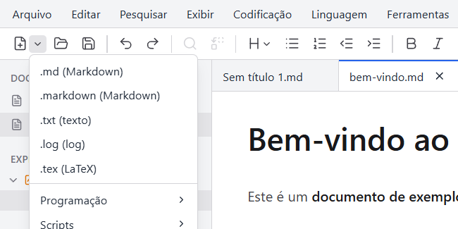
- Novo documento: clique em Novo ou use Ctrl+N. O documento novo é Markdown (.md). Clique na seta ao lado do botão para criar um documento de outro tipo: .md (Markdown), .txt (texto), .py (Python) ou .sql (SQL).
- Abrir arquivos: Arquivo → Abrir ou Ctrl+O. Você pode escolher vários arquivos de uma vez. O limite é de 50 MB por arquivo.
- Abrir uma pasta: Arquivo → Abrir pasta ou Ctrl+Shift+K. A pasta aparece no explorador, na barra lateral, e um clique em um arquivo o abre. Use Fechar pasta para fechá-la.
- Arquivos recentes: os últimos arquivos que você usou ficam na lista Recentes, na barra lateral. Clique em um deles para abri-lo de novo.
Se outro programa alterar um arquivo que você tem aberto, o aplicativo o recarrega sozinho. Se você tiver alterações suas ainda não gravadas naquele documento, ele pergunta antes. Se o arquivo for apagado ou movido, o nome da aba fica em vermelho e riscado.
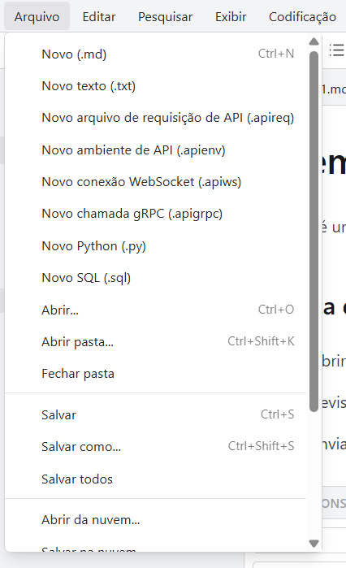
4. Salvar e documentos temporários
- Salvar (Ctrl+S) grava o documento no arquivo. Em um documento novo, o aplicativo pede o nome e o local.
- Salvar como (Ctrl+Shift+S) grava uma cópia com outro nome ou em outro lugar.
- Salvar todos grava todos os documentos com alterações.
Você não perde o que escreveu. O aplicativo guarda automaticamente, uns segundos depois de cada alteração, todos os documentos abertos, inclusive os que nunca foram salvos. Isso é independente de você salvar ou não.
Ao fechar o aplicativo, nada é perguntado e nada é descartado. Quando você abrir de novo, as abas, a pasta e o texto ainda não salvo voltam como estavam. Salve quando quiser gravar no arquivo de verdade.
Ao fechar uma aba que tem alterações, o aplicativo pergunta se você quer salvar, não salvar ou cancelar. Duas observações: o histórico de desfazer (Ctrl+Z) não é guardado entre uma abertura e outra, e a recuperação automática guarda até 100 MB de texto não salvo.
5. Editando texto
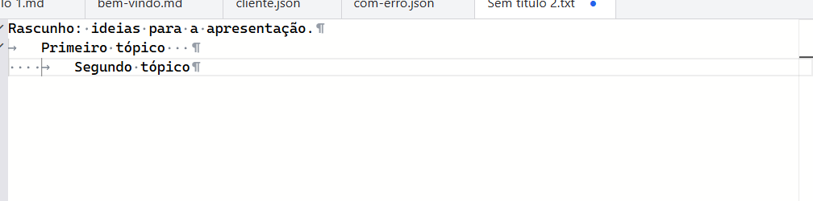
Os comandos de edição ficam em Editar, e os de exibição em Exibir.
- Desfazer e refazer: Ctrl+Z e Ctrl+Y.
- Localizar e substituir no documento: Ctrl+F e Ctrl+H. Para ir a uma linha, use Ctrl+G.
- Vários cursores: segure Alt e clique onde quiser um cursor, ou use Ctrl+D para selecionar a próxima ocorrência da palavra.
- Seleção por coluna: segure Shift+Alt e arraste o mouse para editar várias linhas na mesma coluna.
- Linhas: Alt+↑ e Alt+↓ movem a linha; Shift+Alt+↑ e Shift+Alt+↓ a duplicam; Ctrl+/ comenta ou descomenta.
- Organizar: Ordenar linhas (A-Z), Ordenar linhas (Z-A), Remover linhas duplicadas e Remover espaços no fim das linhas.
- Caracteres invisíveis: mostra os espaços (·), as tabulações (→) e o fim de cada linha (¶). É ótimo para achar espaços sobrando.
- Quebra automática de linha e Recolher tudo / Expandir tudo ajudam a ler arquivos longos.
- Tamanho da letra: Ctrl++ aumenta, Ctrl+- diminui e Ctrl+0 volta ao tamanho padrão.
- Indentação: em Editar, escolha entre espaços ou tabulação e o tamanho (2, 4 ou 8 colunas).
- Exibir Tela Inteira (F11, em Exibir): mostra só o documento, ocupando a tela toda. Pressione F11 de novo, ou clique no botão do canto superior direito, para sair.
As suas preferências de exibição ficam guardadas para a próxima vez. Os textos internos do editor, como a caixa de busca (Ctrl+F) e a paleta de comandos (F1), aparecem em inglês.
Letras, espaços e quebras de linha
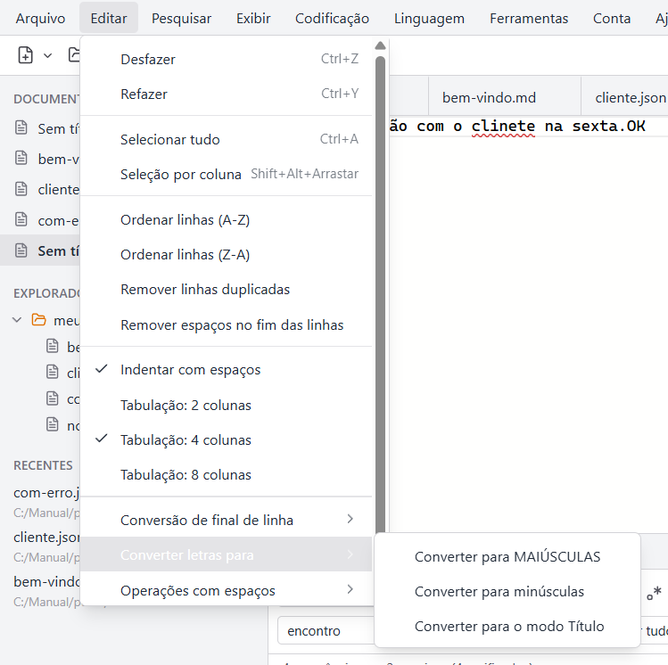
No fim do menu Editar há três submenus:
- Conversão de final de linha: converte as quebras de linha do documento para o formato Windows (CRLF), Unix (LF) ou Mac (CR). A conversão marca o documento como alterado; basta salvar para valer.
- Converter letras para: com um texto selecionado, escolha Converter para MAIÚSCULAS, Converter para minúsculas ou Converter para o modo Título (só a primeira letra de cada frase fica maiúscula).
- Operações com espaços: Limpar espaços à direita, Limpar espaços à esquerda e Limpar espaços à direita e à esquerda valem para a linha do cursor (ou para as linhas selecionadas). Limpar espaços duplos do documento troca dois ou mais espaços seguidos por um só no documento inteiro, sem mexer na indentação do começo das linhas.
MD5, SHA-1, SHA-256 e SHA-512
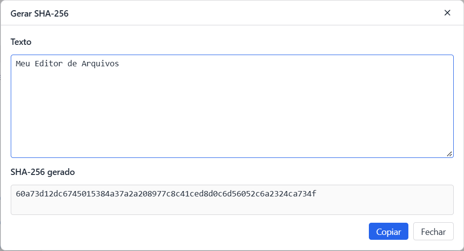
No fim do menu Ferramentas, cada algoritmo tem duas opções:
- Gerar: abre uma janela; digite ou cole o texto e o resultado aparece na hora, logo abaixo. Copiar leva o resultado para a área de transferência.
- Gerar a partir do texto selecionado: calcula o resultado a partir do texto selecionado no documento e o deixa na área de transferência, pronto para colar. Um aviso aparece na barra de status.
Corretor ortográfico
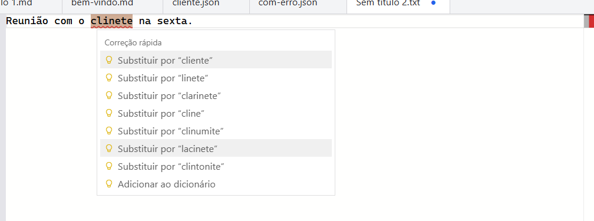
Em documentos Markdown, de texto (.txt) e LaTeX, as palavras que não estão no dicionário ficam sublinhadas em vermelho. Código, links, endereços, siglas e trechos entre crases não são verificados, e arquivos de log e CSV ficam de fora.
- Coloque o cursor na palavra e aperte Ctrl+. (ou clique com o botão direito e escolha Sugestões de ortografia) para ver as sugestões. Escolha uma para trocar a palavra.
- Adicionar ao dicionário faz a palavra ser aceita dali em diante, em qualquer idioma.
- Ferramentas → Verificar ortografia (ou F7) liga e desliga a verificação.
- O corretor usa o idioma da interface. Para verificar em outro idioma, escolha em Ferramentas uma das opções Ortografia: Deutsch, Ortografia: English… — há dicionários de alemão, espanhol, francês, inglês, português do Brasil e português de Portugal. Ortografia: idioma da interface volta a seguir a interface.
Os dicionários vêm com o aplicativo: o corretor funciona sem internet.
6. Markdown
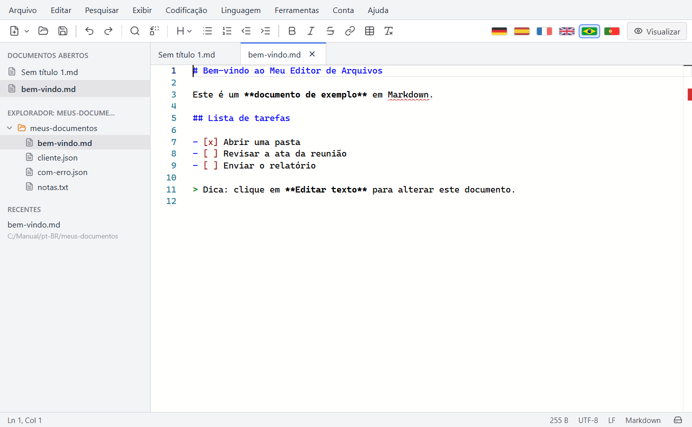
Os arquivos Markdown (.md) abrem formatados e você pode continuar escrevendo direto no texto formatado. A barra de ferramentas aplica a formatação no lugar do cursor ou na seleção: títulos, lista com marcadores, lista numerada, recuo, negrito (Ctrl+B), itálico (Ctrl+I), tachado (Ctrl+Shift+X), link, tabela e remover formatação. Ctrl+Z e Ctrl+Y desfazem e refazem.
Para ver e editar o código Markdown, clique em Editar texto (ou use Ctrl+Shift+E); para voltar ao texto formatado, clique em Visualizar. A barra de formatação funciona nos dois modos.
Ao editar no texto formatado, o Markdown é regravado num formato padronizado (por exemplo, listas com -). Documentos que têm HTML ficam só para leitura nesse modo, para o HTML não se perder: edite-os pelo Editar texto. Para abrir um link no navegador, use Ctrl+clique. As imagens aparecem como uma etiqueta com o nome, e o endereço é mantido no arquivo.
7. Arquivos JSON
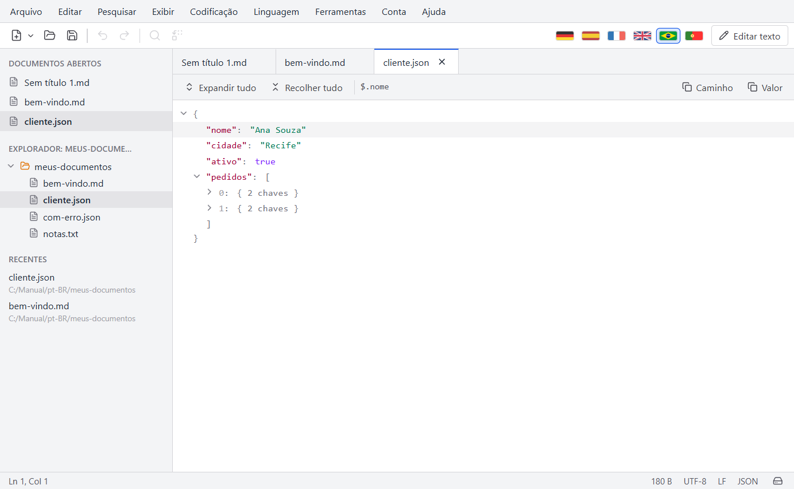
Os arquivos .json abrem em árvore. Clique na seta de um item para abrir ou fechar aquela parte. Use Expandir tudo e Recolher tudo para abrir ou fechar tudo. Ao clicar em um item, a barra mostra o caminho dele, e você pode copiar o Caminho ou o Valor. Listas muito grandes são mostradas aos poucos, com um botão para ver mais.
Para editar, clique em Editar texto. No modo de edição, o botão Formatar JSON (Shift+Alt+F) organiza o arquivo.
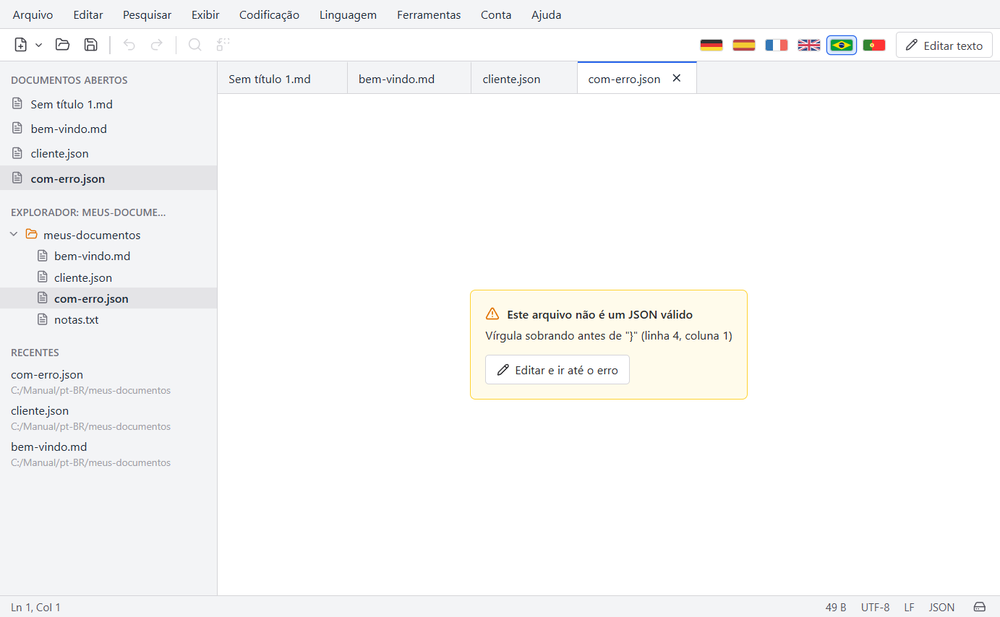
Se o arquivo tiver um erro, o aplicativo explica o problema e diz a linha e a coluna. O botão Editar e ir até o erro abre o editor já no ponto do erro.
8. Busca em arquivos
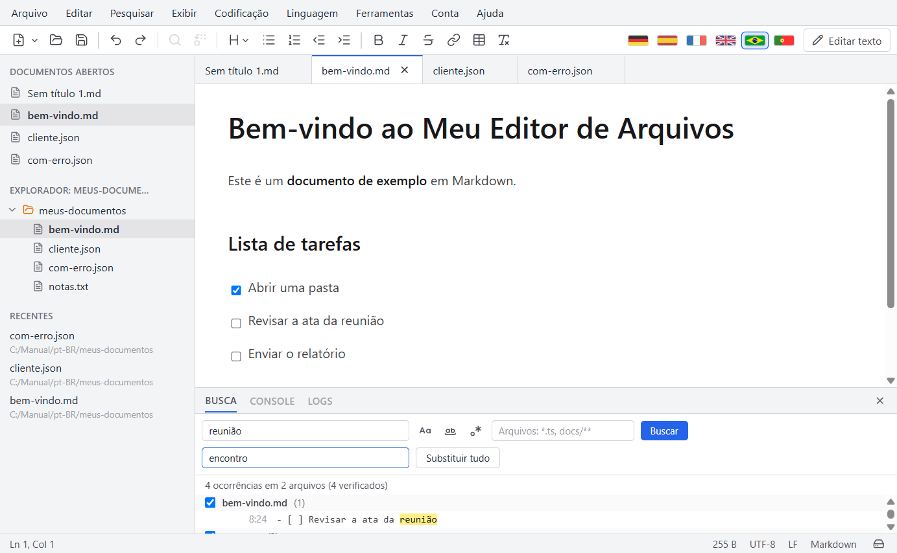
Abra uma pasta e use Pesquisar → Localizar em arquivos (Ctrl+Shift+F). O painel inferior se abre.
- Digite o texto e clique em Buscar (ou aperte Enter).
- Ajuste a busca com os três botões ao lado: Diferenciar maiúsculas, Palavra inteira e Expressão regular.
- Para limitar os arquivos, escreva um filtro, como
*.md, docs/**. - Os resultados aparecem agrupados por arquivo, com linha e coluna. Clique em um resultado para abrir o arquivo e selecionar o trecho.
Para trocar o texto, escreva o novo no campo de substituição e clique em Substituir tudo. Desmarque os arquivos que não devem mudar. O aplicativo pede confirmação, porque a substituição é gravada direto nos arquivos e não pode ser desfeita pelo editor. Arquivos abertos com alterações não salvas são ignorados, para você não perder trabalho.
A busca não entra em pastas como node_modules e .git, nem em arquivos binários ou maiores que 5 MB. Ela mostra no máximo 5.000 ocorrências por vez.
9. Linguagem, codificação e quebras de linha
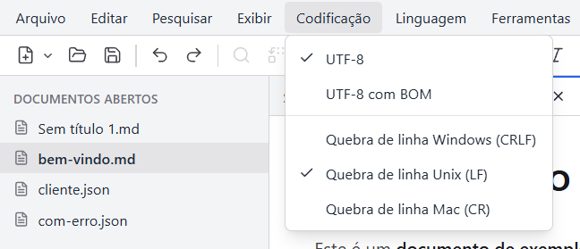
- Linguagem: o aplicativo escolhe a linguagem pela extensão do arquivo e usa cores para facilitar a leitura. Para mudar a de um documento, abra o menu e escolha outra.
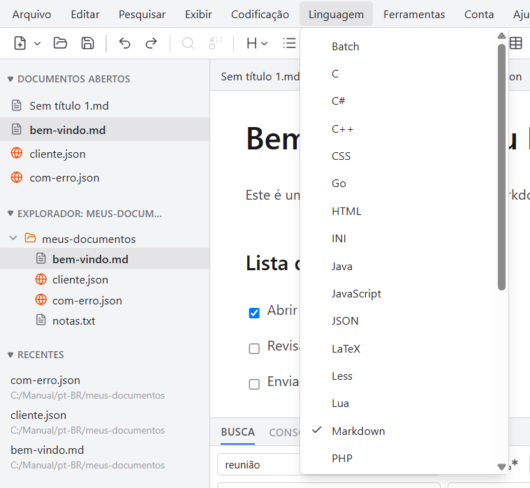
- Codificação: converta o documento para UTF-8 ou UTF-8 com BOM, e escolha a quebra de linha do Windows (CRLF), do Unix (LF) ou do Mac (CR). A conversão marca o documento como alterado; basta salvar para valer.
A codificação e a quebra de linha atuais aparecem na barra de status.
10. Snippets e macros
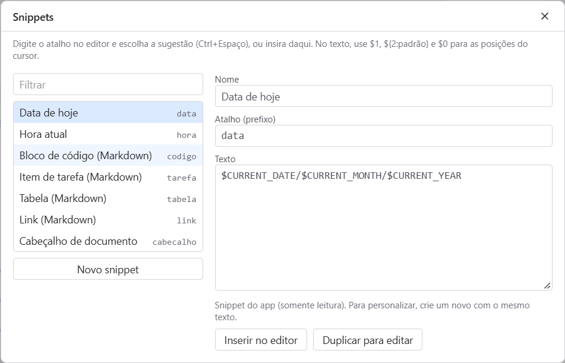
Snippets são trechos de texto prontos. Abra Ferramentas → Snippets. O aplicativo já traz alguns: data, hora, codigo, tarefa, tabela, link e cabecalho. Para usar, digite o atalho no editor e escolha a sugestão (ou aperte Ctrl+Espaço), ou clique em Inserir no editor na janela. Para criar o seu, clique em Novo snippet, dê um nome, um atalho e o texto. No texto, $1 e ${2:padrão} marcam os lugares onde o cursor para, e $0 é o ponto final. Os snippets do aplicativo não podem ser editados, mas você pode duplicá-los.
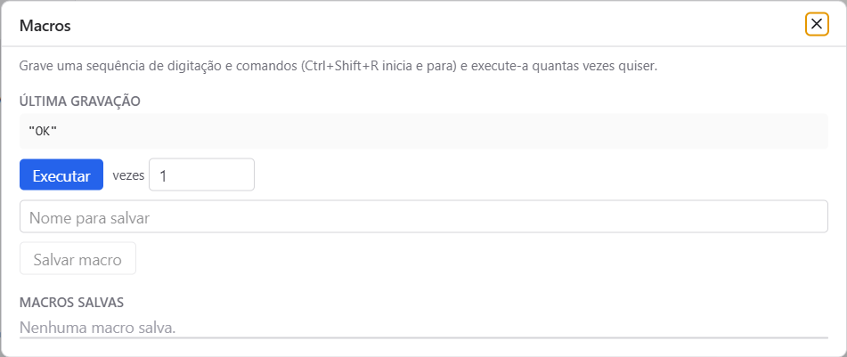
Macros repetem uma sequência que você fez. Aperte Ctrl+Shift+R para começar a gravar, escreva ou edite o que quiser e aperte Ctrl+Shift+R de novo para parar. Depois, Ctrl+Shift+M executa a última gravação. Em Macros você escolhe quantas vezes repetir e pode salvar a macro com um nome. São gravados o texto digitado, o que você cola, as teclas de seta, Home, End, Backspace, Delete, Tab, Enter e os comandos dos menus. Cliques do mouse e Ctrl+Z não são gravados.
11. Conta e arquivos na nuvem
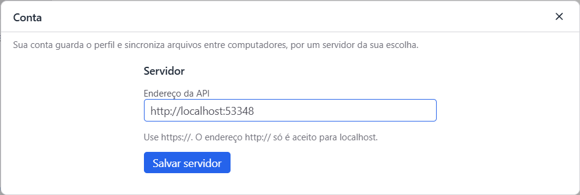
Com uma conta, você guarda arquivos na nuvem e os abre em outros computadores. Abra o menu Conta.
- Endereço do servidor: na primeira vez, informe o endereço que sua empresa ou o administrador passou. Ele começa com
https://. - Criar conta: clique em Criar uma conta e preencha e-mail, nome e uma senha com pelo menos 10 caracteres.
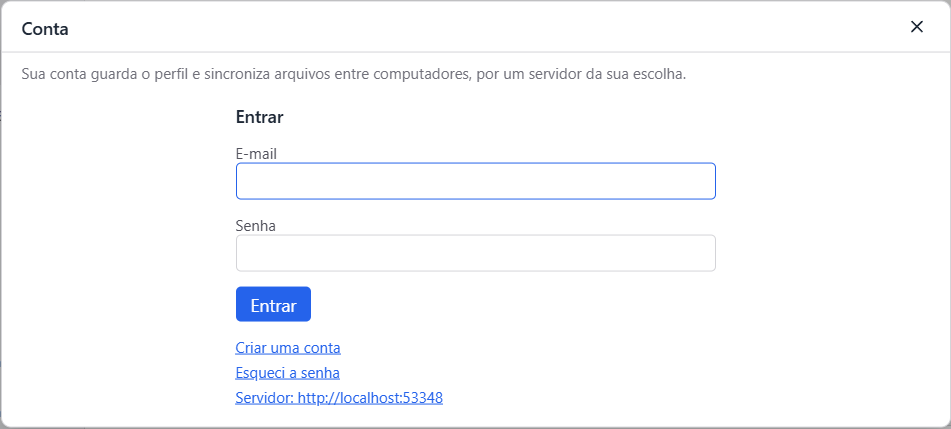
- Entrar: use o e-mail e a senha. Se esquecer a senha, clique em Esqueci a senha: você recebe um código por e-mail e escolhe uma nova senha.
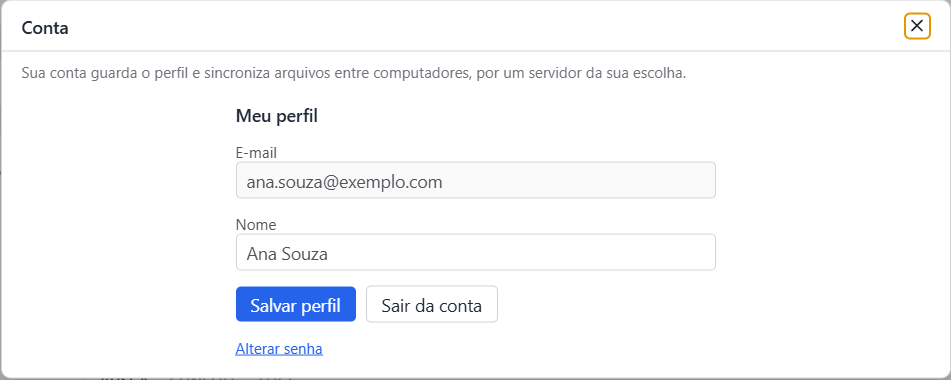
- Perfil: em Conta, abra o seu perfil para mudar o nome, trocar a senha ou sair da conta. Ao trocar a senha, os outros computadores precisam entrar de novo.
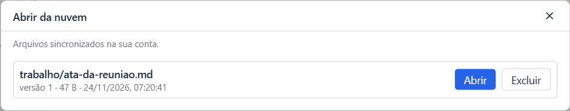
- Salvar na nuvem: Arquivo → Salvar na nuvem. Escolha o caminho, por exemplo
trabalho/ata.md. - Abrir da nuvem: Arquivo → Abrir da nuvem. Na lista você abre ou exclui arquivos. Em um documento aberto da nuvem, Ctrl+S grava de volta na nuvem.
Se o arquivo mudou na nuvem desde a última vez, o aplicativo avisa e pergunta se você quer sobrescrever. Cada arquivo pode ter até 10 MB. Se o seu sistema não tem cofre de credenciais, o aplicativo avisa que você precisará entrar a cada abertura.
12. Idiomas
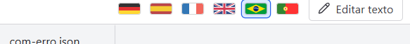
O aplicativo está disponível em alemão, espanhol, francês, inglês, português (Brasil) e português (Portugal). Ele abre no idioma do seu sistema; se não houver tradução, abre em inglês. Para trocar, clique na bandeira do idioma, à esquerda do botão de visualização. A escolha vale na hora e fica guardada para a próxima vez. Este manual abre no idioma que estiver em uso.
13. Atalhos de teclado
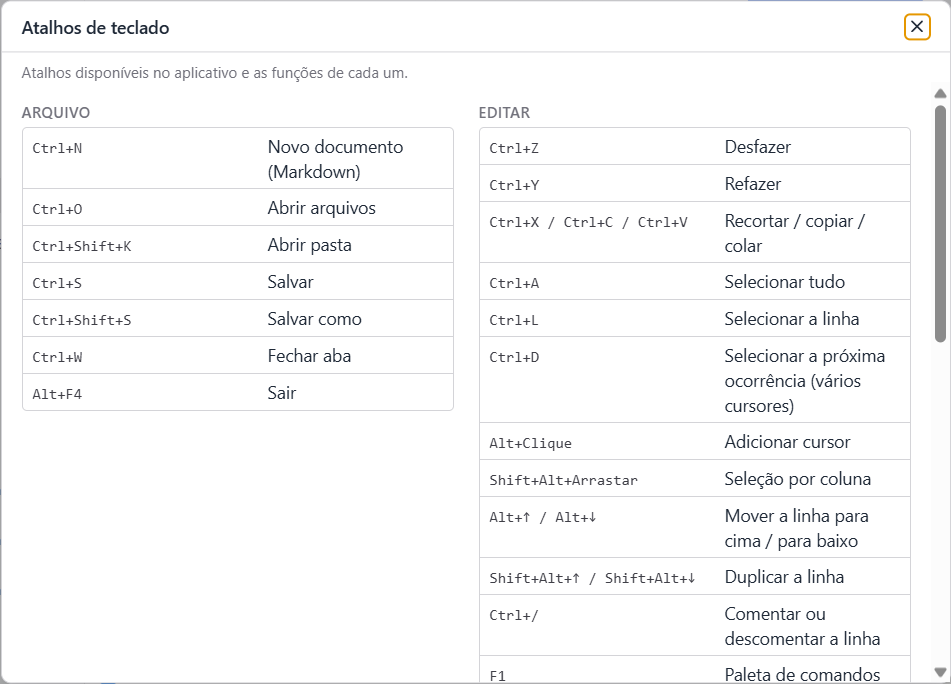
Para ver a lista dentro do aplicativo, abra Ajuda → Atalhos de teclado. Os atalhos disponíveis:
Arquivo
| Ctrl+N | Novo documento (Markdown) |
| Ctrl+O | Abrir arquivos |
| Ctrl+Shift+K | Abrir pasta |
| Ctrl+S | Salvar |
| Ctrl+Shift+S | Salvar como |
| Ctrl+W | Fechar aba |
| Alt+F4 | Sair |
Editar
| Ctrl+Z | Desfazer |
| Ctrl+Y | Refazer |
| Ctrl+X / Ctrl+C / Ctrl+V | Recortar / copiar / colar |
| Ctrl+A | Selecionar tudo |
| Ctrl+L | Selecionar a linha |
| Ctrl+D | Selecionar a próxima ocorrência (vários cursores) |
| Alt+Clique | Adicionar cursor |
| Shift+Alt+Arrastar | Seleção por coluna |
| Alt+↑ / Alt+↓ | Mover a linha para cima / para baixo |
| Shift+Alt+↑ / Shift+Alt+↓ | Duplicar a linha |
| Ctrl+/ | Comentar ou descomentar a linha |
| F1 | Paleta de comandos |
| F7 | Verificar ortografia |
| Ctrl+. | Sugestões de ortografia |
Pesquisar
| Ctrl+F | Localizar |
| Ctrl+H | Substituir |
| Ctrl+Shift+F | Localizar em arquivos |
| Ctrl+G | Ir para linha |
Exibir
| Ctrl+Shift+B | Mostrar ou ocultar a barra lateral |
| Ctrl+Shift+E | Alternar entre visualização e edição (Markdown e JSON) |
| F11 | Entrar ou sair da tela inteira |
| Ctrl++ | Aumentar fonte |
| Ctrl+- | Diminuir fonte |
| Ctrl+0 | Tamanho padrão da fonte |
Markdown e JSON
| Ctrl+B | Negrito |
| Ctrl+I | Itálico |
| Ctrl+Shift+X | Tachado |
| Shift+Alt+F | Formatar o documento (JSON) |
Macros
| Ctrl+Shift+R | Iniciar ou parar a gravação de macro |
| Ctrl+Shift+M | Executar última macro |
14. Perguntas frequentes
Fechei o aplicativo sem salvar. Perdi meu texto? Não. O texto não salvo é guardado automaticamente e volta quando você abre o aplicativo de novo.
Por que o Markdown abre formatado e eu não consigo digitar? É o modo de leitura. Clique em Editar texto (ou Ctrl+Shift+E) para editar.
Meu JSON mostra um erro, mas ele abre em outro programa. O visualizador segue o padrão rigoroso do JSON: não aceita vírgula sobrando no fim, comentários nem aspas simples. Use o botão do erro para ir direto ao problema.
O arquivo é grande e não abre. O limite é de 50 MB por arquivo.
Não consigo entrar na conta ou salvar na nuvem. Confira o endereço do servidor e a conexão com a internet. Se a mensagem disser que a sessão expirou, entre de novo.
Como vejo a versão do aplicativo? Em Ajuda → Sobre o Meu Editor de Arquivos.
15. Sobre e suporte
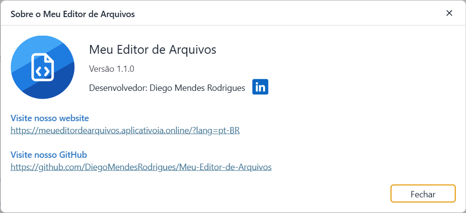
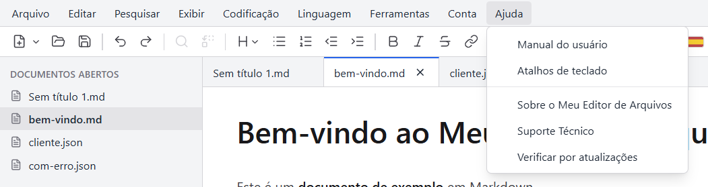
O Meu Editor de Arquivos foi desenvolvido por Diego Mendes Rodrigues. O item Suporte Técnico do menu Ajuda ainda não está disponível nesta versão.